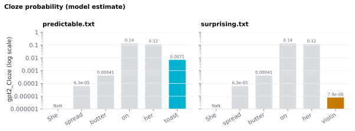

6.1.11Cloze probability
The conditional probability that a selected model assigns to each word given preceding context — i.e.
6.1.11.1What it is
The conditional probability that a selected model assigns to each word given preceding context — i.e. the raw P, not its negative log:
<slug>_Cloze(wᵢ) = P_model(wᵢ | w₁ … wᵢ₋₁) ∈ (0, 1]
Mathematical exponential inverse of <slug>_Surprisal:
<slug>_Cloze = 2^(-<slug>_Surprisal)
PUNCT rows are NaN, and so is the document's first word (no
preceding context to condition on). <slug>_Cloze, <slug>_Surprisal
and <slug>_TopMatch all come from the same forward pass for a given
model — enabling any one of the three metrics for a model triggers
that model's scoring pass. Enabling Cloze for several roster models at
once (see Models) writes one column per
model, e.g. gpt2_Cloze and llama3_8b_Cloze side by side.
6.1.11.2See it

6.1.11.3In your output
| token | gpt2_Cloze |
|---|---|
| She | |
| spread | 6.347e-05 |
| butter | 0.0004147 |
| on | 0.137 |
| her | 0.1174 |
| violin | 7.877e-06 |
| . |
6.1.11.4MATLAB
% Load the word-level table (one row per word)
T = readtable('word/predictable_features.csv', 'TextType', 'string');
T.Properties.VariableNames % every column in the file
T(1:10, {'token', 'gpt2_Cloze'}) % this feature's columns
% Plot
w = ~T.upos == "PUNCT"; % words only
bar(T.gpt2_Cloze(w)); xticks(1:nnz(w)); xticklabels(T.token(w)); ylabel('gpt2_Cloze')
6.1.11.5Getting access & credentials
GPT-2 needs no credentials — it's free and ungated. The gated Llama-3
models need a HuggingFace token + license approval before they run.
This is shared with <slug>_Surprisal and <slug>_TopMatch — see
LLM access & credentials for the full step-by-step.
6.1.11.6In the code
Source: sensi/extractors/predictability.py:add_predictability (the
unified, roster-driven extractor; it replaced the old extractors/llm_cloze.py,
which was removed on 2026-07-11). Backend:
_HuggingFaceBackend, built on AutoModelForCausalLM for every
roster model (GPT-2 included) — local Hugging Face weights only, no
OpenAI backend; see LLM access & credentials.
See Surprisal § Implementation
— <slug>_Cloze is computed in the same scoring call as
<slug>_Surprisal and <slug>_TopMatch, once per
selected model. Per spaCy token:
p = math.exp(sum(subword_log_probs)) # ← this column
surprisal = -sum(subword_log_probs) / math.log(2)
top_match = (argmax_subword == actual_subword) # at the first subword
PUNCT rows are masked to NaN. The probability is stored to 6
significant digits (e.g. 0.0123457, or 2.07e-12 for a very
unlikely word), so it is never rounded down to exactly 0 and
Cloze = 2^(−Surprisal) holds for every word. Before 2026-10-21 it was
rounded to 6 decimal places, which turned any word above about 20 bits
of surprisal into 0.0.
6.1.11.7EEG rationale
"Cloze probability" is the historical name from offline human-cloze
norming (Taylor 1953): show humans the context up to position i
and ask them to fill in the missing word; tally the proportion who
produce each candidate. The N400 was originally characterized as
inversely proportional to (human) cloze probability (Kutas 1984,
DeLong 2005).
<slug>_Cloze is the modern machine analogue — a model's
conditional probability over the actual continuation. Where the
relationship to the N400 is concerned:
- For amplitude prediction, surprisal (the log) is the usual regressor. The log form is established for reading times (Smith 2013), and GPT-3 surprisal explained single-trial N400 amplitude better than cloze probability (Michaelov 2024). For the N400 the shape is not settled, though: Szewczyk 2022 find the facilitation is linear in probability for expected words and logarithmic for unexpected ones, with a combination fitting best, so surprisal and probability each capture part of it.
- For comparison with classic human-cloze experiments, the raw probability is what aligns with the published metric.
- For analyses that need an interpretable [0–1] regressor (logistic models, threshold-based contrasts of "predictable" vs "not"), the probability form is more natural than bits.
When in doubt, use <slug>_Surprisal for
ERP-amplitude modelling (the more common choice) and <slug>_Cloze when you
specifically need the cloze metric, or enter both if you want to test the
linear-plus-log shape of Szewczyk 2022.
6.1.11.8Papers
Cloze procedure & N400:
- Taylor 1953 Taylor. "Cloze procedure": A new tool for measuring readability. Journalism Quarterly. doi:10.1177/107769905303000401 — original cloze methodology.
- Kutas 1984 Kutas & Hillyard. Brain potentials during reading reflect word expectancy and semantic association. Nature. doi:10.1038/307161a0 — N400 ∝ −cloze probability.
- DeLong 2005 DeLong, Urbach, Kutas. Probabilistic word pre-activation during language comprehension inferred from electrical brain activity. Nature Neuroscience. doi:10.1038/nn1504
- Smith 2013 Smith & Levy. The effect of word predictability on reading time is logarithmic. Cognition. doi:10.1016/j.cognition.2013.02.013 — reading-time cost is logarithmic in predictability over six orders of magnitude (reading times, not ERPs).
LM-derived cloze:
- Hofmann 2022 Hofmann, Remus, Biemann, Radach, Kuchinke. Language models explain word reading times better than empirical predictability. Frontiers in Artificial Intelligence. doi:10.3389/frai.2021.730570 — LM probabilities outperform human cloze-completion probabilities at predicting fixation durations and gaze durations in English and German eye-tracking corpora.
- Michaelov 2024 Michaelov, Bardolph, Van Petten, Bergen, Coulson. Strong Prediction: Language Model Surprisal Explains Multiple N400 Effects. Neurobiology of Language 5(1), 107–135. doi:10.1162/nol_a_00105 — direct comparison: LM surprisal explains N400 amplitude better than cloze probability or distributional semantic similarity.
- Szewczyk 2022 Szewczyk & Federmeier. Context-based facilitation of semantic access follows both logarithmic and linear functions of stimulus probability. Journal of Memory and Language 123, 104311. doi:10.1016/j.jml.2021.104311 — N400 facilitation "combines linear and logarithmic functions"; graded even among unpredictable words.